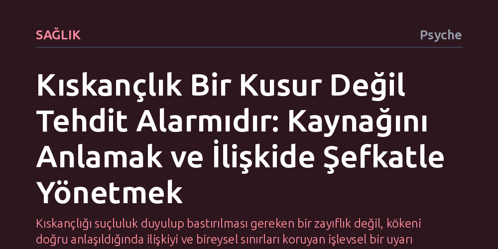

SAGLIK · Psyche · 2026-10-15
Kıskançlık, ilişkideki bir güvenlik tehdidini haber veren doğal bir uyarı mekanizmasıdır. Somut olaylara dayanan tepkisel kıskançlık ile geçmiş yaralardan beslenen kuşkucu kıskançlığı ayırt etmek, bu hissi yıkıcı tepkiler yerine yapıcı iletişime dönüştürmeyi sağlar.
Kıskançlığı suçluluk duyulup bastırılması gereken bir zayıflık değil, kökeni doğru anlaşıldığında ilişkiyi ve bireysel sınırları koruyan işlevsel bir uyarı olarak görmeyi sağlar.

Kıskançlık çoğu zaman zayıflık, yetersizlik ya da utanılması gereken ahlaki bir kusur gibi algılanır. Oysa klinik psikolog Carla Marie Manly, bu duygunun insanın en temel evrimsel ve psikolojik ihtiyaçlarından biri olan güvenlik arayışından doğduğunu vurgular. Bir ilişkide sevginin, ilginin ya da bağlılığın tehlikede olduğu algılandığında kıskançlık bir yangın alarmı gibi devreye girer. Bu alarmın çalması kişinin kusurlu olduğunu göstermez; aksine, değer verilen bir bağın risk altında hissedildiğini haber verir.
Bu noktada kıskançlık ile haset arasındaki ayrımı netleştirmek gerekir. Haset, bir başkasının sahip olduğu bir niteliği, başarıyı ya da nesneyi arzulama durumudur. Kıskançlık ise halihazırda var olan ve değer atfedilen bir ilişkideki güvenlik hissinin sarsılmasıyla ilgilidir. İnsanlar çocukluktan itibaren bağlandıkları kişilerin ilgisini kaybetmekten korkarlar; yeni doğan kardeşini annesinin kucağından itmeye çalışan bir çocuğun gösterdiği tepki de, yetişkinlikte eşinin başkasıyla flörtleştiğini düşünen birinin hissettiği gerilim de aynı kökten beslenir.
Duyguyu bastırmaya çalışmak ya da doğrudan öfke nöbetiyle dışa vurmak, alarmın işaret ettiği asıl sorunu çözmez. Manly’ye göre amaç kıskançlığı tamamen yok etmek değil, onun ne anlatmak istediğini çözebilmektir. Bastırılan kıskançlık zamanla içeride birikerek özsaygıyı zedeler, kronik kaygıya yol açar ve en nihayetinde ilişkileri içten içe kemirir.
Kıskançlıkla sağlıklı bir ilişki kurabilmenin ilk adımı, hissedilen tehlikenin gerçek mi yoksa zihinsel bir kurgu mu olduğunu ayırt etmektir. Klinik psikolojide bu ayrım tepkisel ve kuşkucu kıskançlık kavramlarıyla yapılır. Tepkisel kıskançlık, partnerin somut bir sadakatsizliği veya eski sevgilisiyle gizlice iletişim kurması gibi açık ve sınır ihlali barındıran eylemlere verilen doğrudan bir tepkidir. Burada çalan alarm nesnel bir tehdide dayanır ve kişinin ilişkideki sınırlarını yeniden müzakere etmesi gerektiğini gösterir.
Kuşkucu kıskançlıkta ise durum oldukça farklıdır. Ortada karşı tarafın sergilediği hiçbir aldatma, gizlilik ya da tehdit edici davranış yokken bile kişi yoğun bir güvensizlik yaşar. Partneri son derece dürüst ve şeffaf olsa dahi, en ufak bir sohbeti veya geç gelen bir mesajı ihanet kanıtı olarak yorumlayabilir. Bu tür kıskançlık, mevcut ilişkinin dinamiklerinden ziyade kişinin geçmişten taşıdığı çözülmemiş yaralardan beslenir.
Geçmişte ebeveyn ihmaline uğramış, aile içinde kardeşler arası rekabette yok sayılmış ya da önceki ilişkilerinde ağır ihanetler yaşamış bireylerde kuşkucu kıskançlık kronikleşebilir. Kişi çocuklukta veya geçmişte yaşadığı güvensizliği bugünkü ilişkisine yansıtır. Dolayısıyla hissedilen yoğun alarm, mevcut partnerin davranışlarından değil, geçmişin kapanmamış hesaplarından kaynaklanmaktadır.
Kıskançlık tetiklendiğinde beden bunu bir tehlike olarak algılar ve hızlıca fizyolojik tepkiler üretir: Midede kasılma, nabızda yükselme, göğüste sıkışma veya omuzlarda gerginlik baş gösterir. Çoğu insan bu fiziksel baskı karşısında ya hemen karşı tarafa saldırarak hesap sorar ya da tamamen içine kapanıp soğuk bir duvar örer. Oysa bu otomatik tepkiler ilişkiyi daha da çıkmaza sokar.
Manly, bu anlarda hemen eyleme geçmek yerine durup bedendeki duyumları merakla izlemeyi önerir. Yazarın belirttiği gibi, "Duyguya merakla yaklaşmak, onun tarafından yönetilmenin önüne geçer." Birkaç derin nefes almak, kısa bir yürüyüşe çıkmak ve zihne kırmızı bir dur işareti getirmek, beynin tehdit mekanizmasını sakinleştirir. Bu duraklama, kişinin bedensel duyumlarını ve hissettiği duygunun şiddetini sakince tanımlamasına zemin hazırlar.
Bu süreçte kendine yargılayıcı değil, şefkatli yaklaşmak belirleyicidir. Kıskançlık hissettiği için kendine kızmak sadece direnci ve acıyı artırır. Bir kıskançlık günlüğü tutarak tetikleyicileri, bedensel duyumları ve akla gelen düşünceleri düzenli olarak not etmek, döngüleri fark etmeyi ve fevri tepkiler yerine bilinçli tercihler yapmayı mümkün kılar.
Kıskançlığın kaynağı ister somut bir olay ister geçmişten gelen bir kuruntu olsun, bu duyguyu sessizce yutmak yerine güven duyulan biriyle paylaşmak iyileşmenin anahtarıdır. Ancak buradaki paylaşım karşı tarafı itham eden ya da köşeye sıkıştıran bir hesap sorma değil, kendi kırılganlığını ortaya koyan dürüst bir diyalog olmalıdır.
Eğer ortada somut bir davranış varsa, kişi öfkeyle saldırmak yerine hissettiği incinmeyi ve ilişkide güven duymak için nelere ihtiyaç duyduğunu açıkça belirtmelidir. Eğer kıskançlık kişinin kendi kuşkularından ve geçmiş travmalarından kaynaklanıyorsa, bunu partnerine dürüstçe aktarıp suçlamadan destek talep etmesi aradaki bağı güçlendirir. Bu yaklaşım, ilişkiyi bir çatışma alanından ortak bir güven inşa etme sürecine dönüştürür.
Kuşkusuz her iletişim girişimi karşı tarafta yapıcı bir karşılık bulmayabilir; öfke, yok sayma veya duvar örme ile karşılaşıldığında sınırları korumak esastır. Kıskançlık kişinin gündelik hayatını, özsaygısını ve ilişkilerini felç eden kronik bir hal almışsa ya da kökleri derin bağlanma travmalarına dayanıyorsa, bireysel terapi veya çift terapisi almak bu kısır döngüyü kırmanın en sağlıklı yoludur.